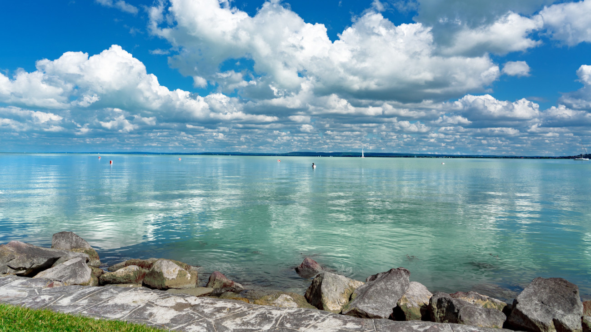
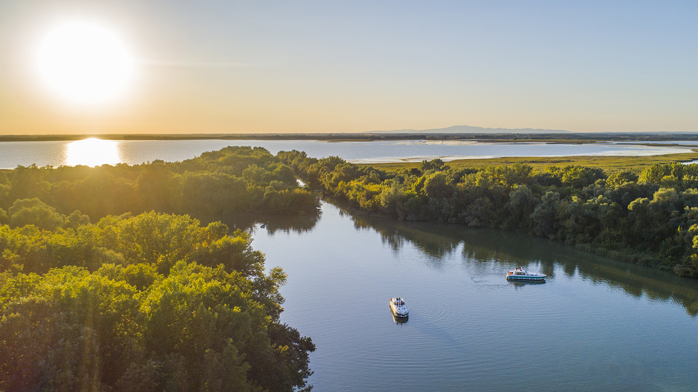
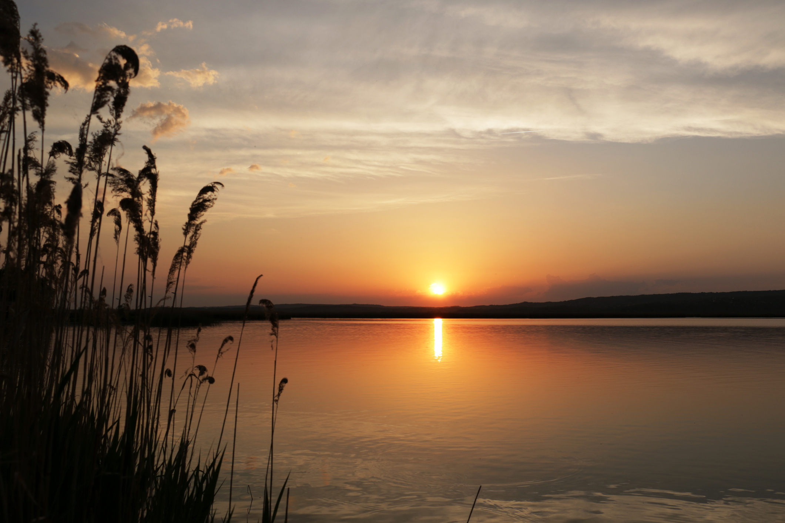

Hazánk Vizei
Magyarország legszebb vizei
Ismerd meg hazánk legismertebb tavainak és folyóinak világát! Barangolj a partjaikon, csodáld meg a természetet és élvezd a vizek nyugalmát.
Balaton
Közép-Európa legnagyobb tava, amelyet sokan a „magyar tengerként” emlegetnek. Ideális pihenéshez és vízi sportokhoz is.
Duna
Európa egyik leghosszabb folyója, amely Magyarországon keresztül is áthalad. Kultúrában és történelemben gazdag vidékeket köt össze.

Tisza
A Duna után hazánk második legnagyobb folyója. Tiszta vize, gazdag élővilága és békés partjai miatt kedvelt kirándulóhely.
Velencei-tó
Magyarország egyik legmelegebb tava, amely tökéletes fürdőzéshez és vízi sportokhoz. A nyári hónapokban különösen népszerű.
